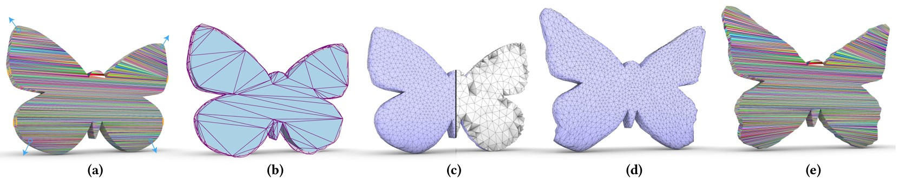
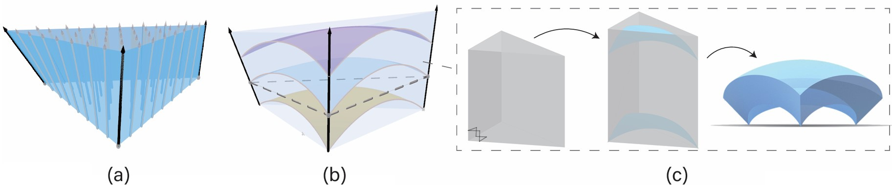
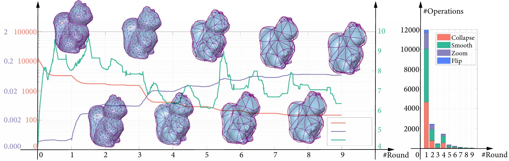

Smooth Bijective Projection in a High-order Shell
| Shibo Liu Yang Ji Jia-Peng Guo Ligang Liu Xiao-Ming Fu | ||
| University of Science and Technology of China | ||
ACM Transactions on Graphics (Proc. SIGGRAPH), 43(4), 2024.
|
 Teaser: High-order shell and application. Given a low-quality triangular mesh (a), we construct a high-order shell (b). Then, we remesh the low-quality mesh within the high-order shell to generate a new mesh, which is further tetrahedrized (c). We deform the mesh in (c) to generate a deformed mesh (d) using the settings in (a). Finally, the displacement field of the deformation is bijectively transferred back to the input to produce a deformation of the input mesh (e). |
|
|
Abstract |
|
| Keywords |
high-order shell, attribute transfer, smooth projection, bijective |
| Motivation |
|
| Methods |

Figure 2: The definition of high-order shell. (a) The continuous vector field. (b) The triangular prism envelopes by three
Bezier triangles and three side bilinear surfaces. (c) The generation of the bezier triangles such that the boundaries of thr Bezier
triangle conform to the bilinear patch.
To efficiently construct sparse and high-quality high-order shells, we start with a linear shell of minimal initial thickness
and continuously perform local operations to optimize the shell structure until the target thickness is reached. During the
optimization process, we use an interior-point method strategy. After each local operation, we perform conditional fitting
of the Bezier triangles and reject any local operations that would cause the shell space to lose its bijective properties.

Figure 3: Workflow of our method. Given an input mesh, our algorithm is initialized with a dense linear shell, where the vector field is defined to align with the image of the
side bilinear surfaces' parametric lines in one direction. Then, we iteratively perform local remeshing operations to optimize and
simplify the shell until the specified thickness is reached. In each operation, we place the control points based on the placement
condition and check whether any constraint is violated. If there is a violation, we reject the operation.
Specifically, the operations include collapse, flip, zoom and optimize.
We terminate the algorithm when no local operations can be further conducted.
|
| Paper |
|
| Ack |
|
| BibTex |
@article {liu2024curveshell, title = {Smooth Bijective Projection in a High-order Shell}, author = {Liu, Shibo and Ji, Yang and Guo, Jia-Peng and Liu, Ligang and Fu, Xiao-Ming} journal = {ACM Transactions on Graphics}, volume={43}, number={4}, pages={1--13}, year = {2024} } |
|
Copyright and disclaimer: |